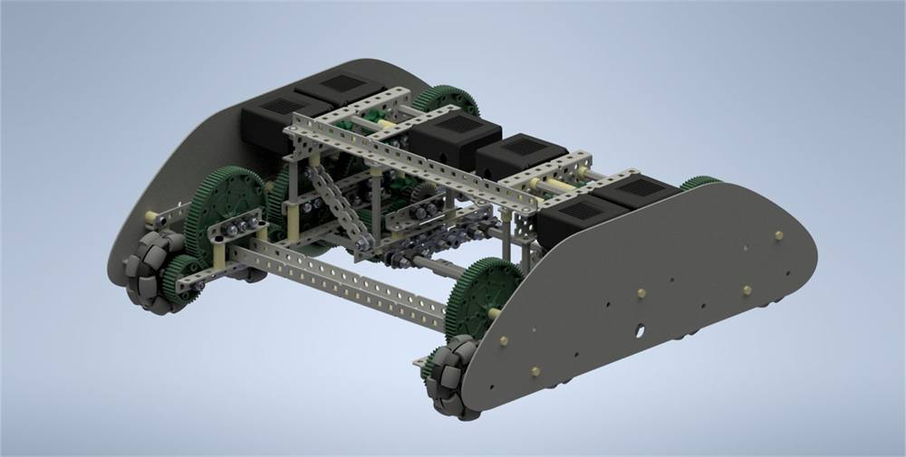
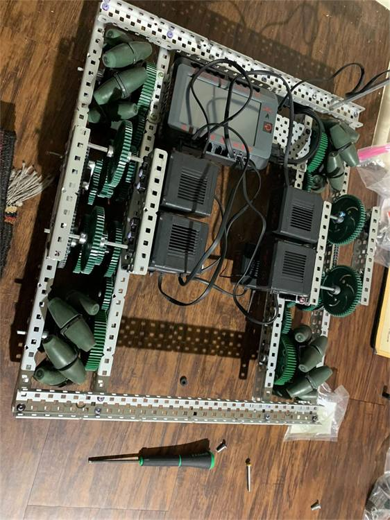

Differential Mecanum Drive
Custom transmission that uses planetary gears to distribute power from booster motors across a mecanum drivetrain.
Design Goals
- Six-motor mecanum drive with balanced power distribution.
- Mechanical power sharing between the two drive motors on each side.
- Compact implementation using VEX-compatible components.

